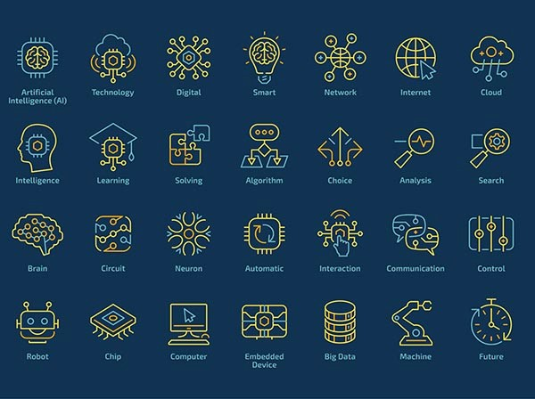
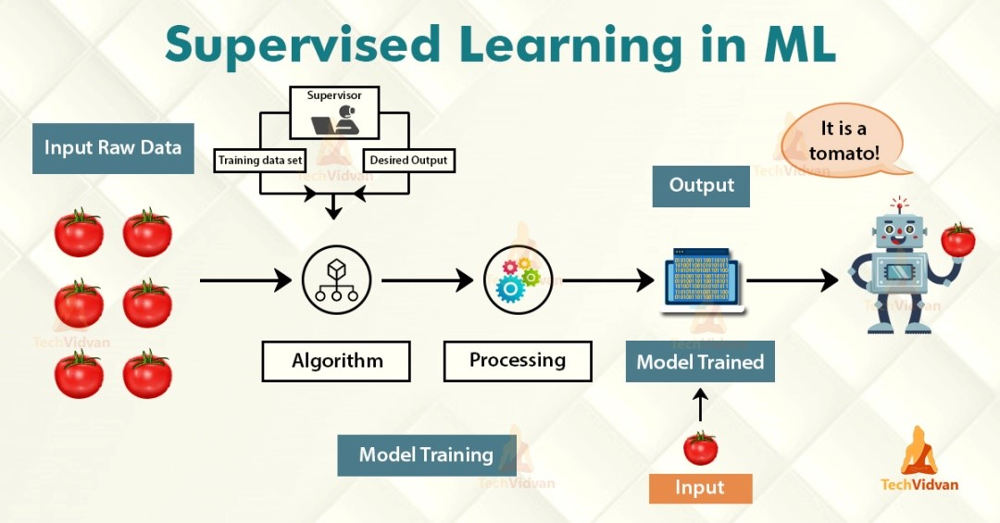
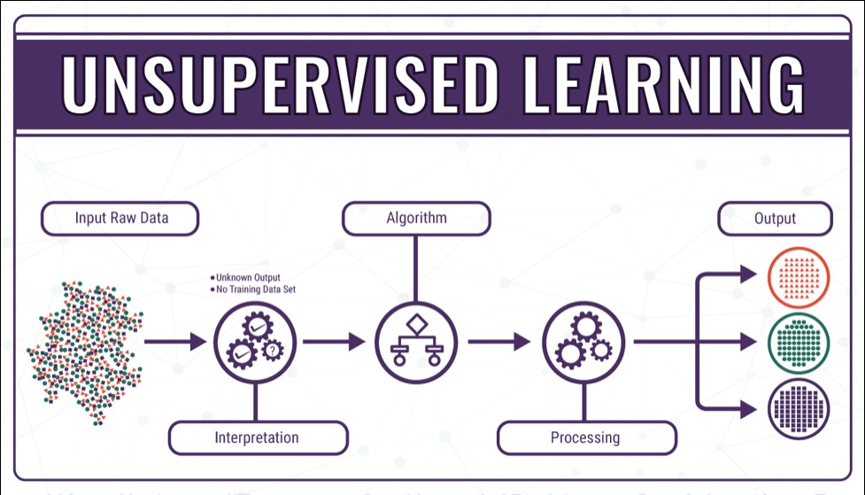

Introduction to Machine Learning
Greetings! This is Parv Arora and I have done certifications in Machine Learning. So, in this series of blogs, I am going to give you a full tutorial on machine learning.

Today, machine learning algorithms enable computers to communicate with humans, autonomously drive cars, write and publish sport match reports, and find terrorist suspects. I firmly believe machine learning will severely impact most industries and the jobs within them, which is why every manager should have at least some grasp of what machine learning is and how it is evolving.
In this blog I offer a quick trip through time to examine the origins of machine learning as well as the most recent milestones.
1950 — Alan Turing creates the “Turing Test” to determine if a computer has real intelligence. To pass the test, a computer must be able to fool a human into believing it is also human.
1952 — Arthur Samuel wrote the first computer learning program. The program was the game of checkers, and the IBM computer improved at the game the more it played, studying which moves made up winning strategies and incorporating those moves into its program.
1957 — Frank Rosenblatt designed the first neural network for computers (the perceptron), which simulate the thought processes of the human brain.
1967 — The “nearest neighbor” algorithm was written, allowing computers to begin using very basic pattern recognition. This could be used to map a route for traveling salesmen, starting at a random city but ensuring they visit all cities during a short tour.
1979 — Students at Stanford University invent the “Stanford Cart” which can navigate obstacles in a room on its own.
1981 — Gerald Dejong introduces the concept of Explanation Based Learning (EBL), in which a computer analyses training data and creates a general rule it can follow by discarding unimportant data.
1985 — Terry Sejnowski invents NetTalk, which learns to pronounce words the same way a baby does.
1990s — Work on machine learning shifts from a knowledge-driven approach to a data-driven approach. Scientists begin creating programs for computers to analyze large amounts of data and draw conclusions — or “learn” — from the results.
1997 — IBM’s Deep Blue beats the world champion at chess.
2006 — Geoffrey Hinton coins the term “deep learning” to explain new algorithms that let computers “see” and distinguish objects and text in images and videos.
2010 — The Microsoft Kinect can track 20 human features at a rate of 30 times per second, allowing people to interact with the computer via movements and gestures.
2011 — IBM’s Watson beats its human competitors at Jeopardy.
2011 — Google Brain is developed, and its deep neural network can learn to discover and categorize objects much the way a cat does.
2012 – Google’s X Lab develops a machine learning algorithm that is able to autonomously browse YouTube videos to identify the videos that contain cats.
2014 – Facebook develops DeepFace, a software algorithm that is able to recognize or verify individuals on photos to the same level as humans can.
2015 – Amazon launches its own machine learning platform.
2015 – Microsoft creates the Distributed Machine Learning Toolkit, which enables the efficient distribution of machine learning problems across multiple computers.
2015 – Over 3,000 AI and Robotics researchers, endorsed by Stephen Hawking, Elon Musk and Steve Wozniak (among many others), sign an open letter warning of the danger of autonomous weapons which select and engage targets without human intervention.
2016 – Google’s artificial intelligence algorithm beats a professional player at the Chinese board game Go, which is considered the world’s most complex board game and is many times harder than chess. The AlphaGo algorithm developed by Google DeepMind managed to win five games out of five in the Go competition.

What is Machine Learning?
Two definitions of Machine Learning are offered. Arthur Samuel described it as: "the field of study that gives computers the ability to learn without being explicitly programmed." This is an older, informal definition.
Tom Mitchell provides a more modern definition: "A computer program is said to learn from experience E with respect to some class of tasks T and performance measure P, if its performance at tasks in T, as measured by P, improves with experience E."
Example: playing checkers.
E = the experience of playing many games of checkers
T = the task of playing checkers.
P = the probability that the program will win the next game.
In general, any machine learning problem can be assigned to one of two broad classifications:
Supervised learning and Unsupervised learning.
Supervised Learning
In supervised learning, we are given a data set and already know what our correct output should look like, having the idea that there is a relationship between the input and the output.
Supervised learning problems are categorized into "regression" and "classification" problems. In a regression problem, we are trying to predict results within a continuous output, meaning that we are trying to map input variables to some continuous function. In a classification problem, we are instead trying to predict results in a discrete output. In other words, we are trying to map input variables into discrete categories.

Unsupervised Learning
Unsupervised learning allows us to approach problems with little or no idea what our results should look like. We can derive structure from data where we don't necessarily know the effect of the variables.
We can derive this structure by clustering the data based on relationships among the variables in the data.
With unsupervised learning there is no feedback based on the prediction results.

So, this is all about the Introduction and History of Machine Learning. Thank you to be so patient. I hope you gained a brief knowledge about Machine Learning.
Be alert guys I will post more on Machine Learning. Feel free to provide feedback guys to help me improve my content.
• PARV ARORA
Widget is loading comments...